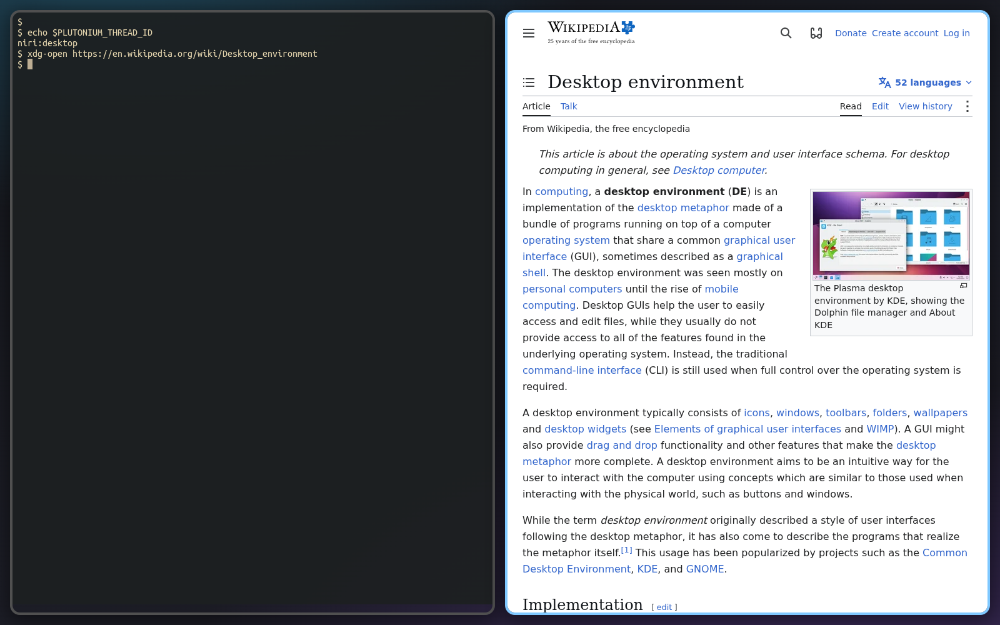

You already know how to change it.
HTML, CSS, JavaScript and the browser's dev tools. No compositor to recompile, no plugin API to learn: a shell is a folder in ~/.pluto/shells, and saving a file reloads it.
So you change it the way you'd change a web page. Native apps and real Chromium tabs are elements you lay out with HTML and CSS, and a window manager is a web app you can open in an editor, reload, and rewrite in an afternoon. Or ask an agent to.
InstallSource
A terminal, and a page opened from a link in it. Both are elements in the shell's page, and the shell's stylesheet decides where they go: the gaps and borders are its CSS.
HTML, CSS, JavaScript and the browser's dev tools. No compositor to recompile, no plugin API to learn: a shell is a folder in ~/.pluto/shells, and saving a file reloads it.
Every shell is a git repository, and every save is a commit. A change that stops it starting is rolled back, and plutonium run --safe always gets you the plain shell.
Run several shells at once and switch with Super+Tab: tiles for work, floating windows for everything else, an agent's view when you're pairing with one.
A shell is the page your desktop is laid out by: where windows go, how you move between them, what a new tab does. Plutonium comes with four, named for Pluto's moons, and leaves the fifth for you. Point at a moon to see its shell at work.
Super+Tab switches between them.
Every app and tab belongs to a thread: a Styx desktop, a Charon workspace, a Hydra conversation. What you open from inside a thread lands in it, so the page you were reading stays next to the terminal you were reading it for.
Click a link in a terminal, run xdg-open, or let git or Python open $BROWSER: you get a Plutonium tab in the thread the app is in, not a browser window somewhere else.
Anything that isn't a web page goes to the real xdg-open, run with the thread's environment, so the app that handles it opens its window in the thread as well.
Apps like LibreOffice hand a second launch to the copy that's already running, which may be in a different thread. So every thread gets a session bus of its own, a proxy in front of yours that keeps the names a thread's apps claim to that thread.
Styx opens the tab as a new column next to the focused one. Kerberos puts it in the current thread. Hydra puts it in the conversation's browser panel.
Any agent that speaks MCP can see, launch and drive the apps and tabs in its thread, without taking your mouse or keyboard.
The tools act on the windows and tabs tagged with the agent's thread. The apps it launches and the tabs it opens join that thread, and wait there unless it asks for them to be shown.
An agent's clicks and keys go straight to the app's window, whether or not a shell is showing it. The window gets a keyboard focus of its own for the agent, next to yours.
Hydra shows a window an agent is working in behind a notice that says so, with Take control.
Plutonium will be open source, under the MIT licence: the shells, the changes to Chromium, and the tools that build and run it. Read any of it, change any of it, and keep what you make.
A shell is a folder of HTML, CSS and JavaScript. Copy one, rename it and change it until it's yours; Kerberos is there to be read first.
What Plutonium changes in Chromium is kept as numbered patches on top of a Chromium release, small enough to read one at a time.
The release package is all you need to run it. To change Chromium, plutonium chromium fetch, patch and build make your own; expect an afternoon.
A public beta: usable day to day by its developer, new to everyone else, and so far tried on a handful of machines.
One package for x86-64 Linux with systemd and glibc 2.35 or newer, and AMD or Intel graphics on Mesa. Nothing to set up first: no containers, no podman.
curl -fsSL https://…/install.sh | shIt puts Plutonium in /opt/plutonium, sets up Chromium's chrome-sandbox, and adds Plutonium to your login screen.
Plutonium takes the whole display and every input device, so first choose a key you never use. Pressing it ends the session and puts you back where you were, even if it has hung.
1 plutonium killswitch find 2 plutonium killswitch install
Log out, choose Plutonium on the login screen, and log in. It runs straight on the display, as your desktop; Ctrl+Alt+Backspace ends it.
plutonium run --x11 :0 niri opens it as a window on the desktop you're using now.